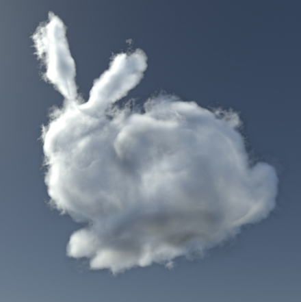
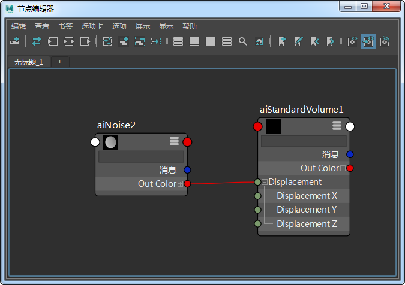
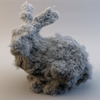
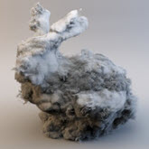
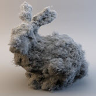

本教程介绍如何使用连接到标准体积着色器的“置换”(Displacement)属性的噪波着色器来偏移体积的采样位置。您可以使用这种方法创建一些有趣的效果，例如为噪波着色器设置动画来表现某种流动的气体烟雾。在本示例中，我们将使用噪波着色器。但是，您可以使用任何纹理贴图来偏移体积。
要下载对应的场景，请单击此处。
首先，从 OpenVDB 下载页面下载兔子体积文件。
创建 Arnold 体积并打开体积 vdb 文件 bunny_cloud.vdb
创建一个 standard_volume 着色器和一个噪波*着色器。将噪波着色器连接到 *standard_volume 着色器的“置换”(Displacement)属性。您可能需要增加密度才能查看兔子体积。

噪波 -> standard_volume.displacement
下面的图像显示了使用连接到 standard_volume.displacement 的不同噪波类型产生的效果。
|  |  |  |
| Arnold 噪波 | 单元噪波 | 柏林噪波 |
有关 standard_volume 着色器的“置换”(Displacement)属性的教程到此结束。